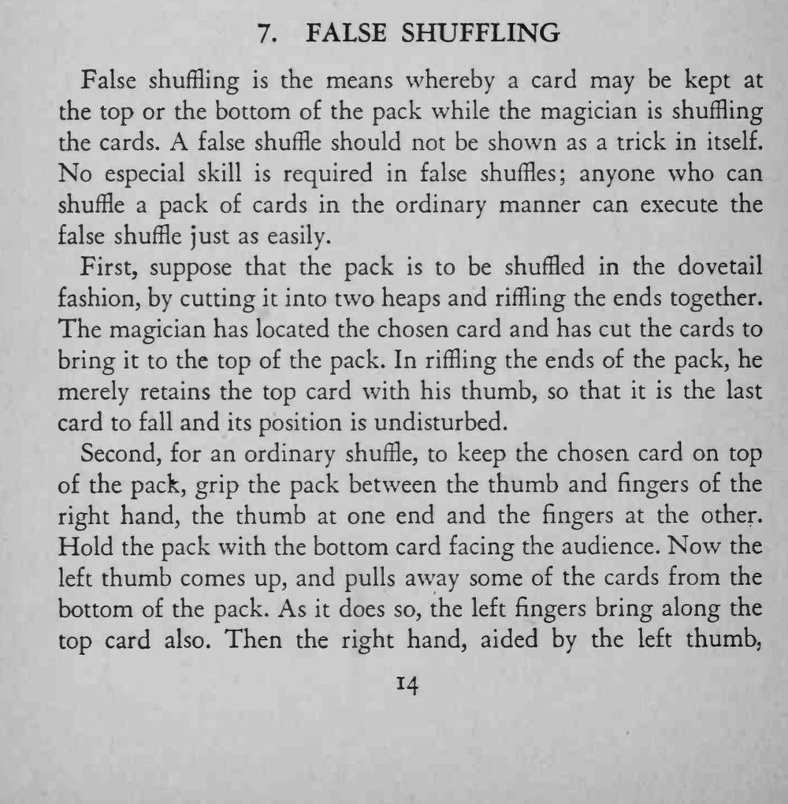
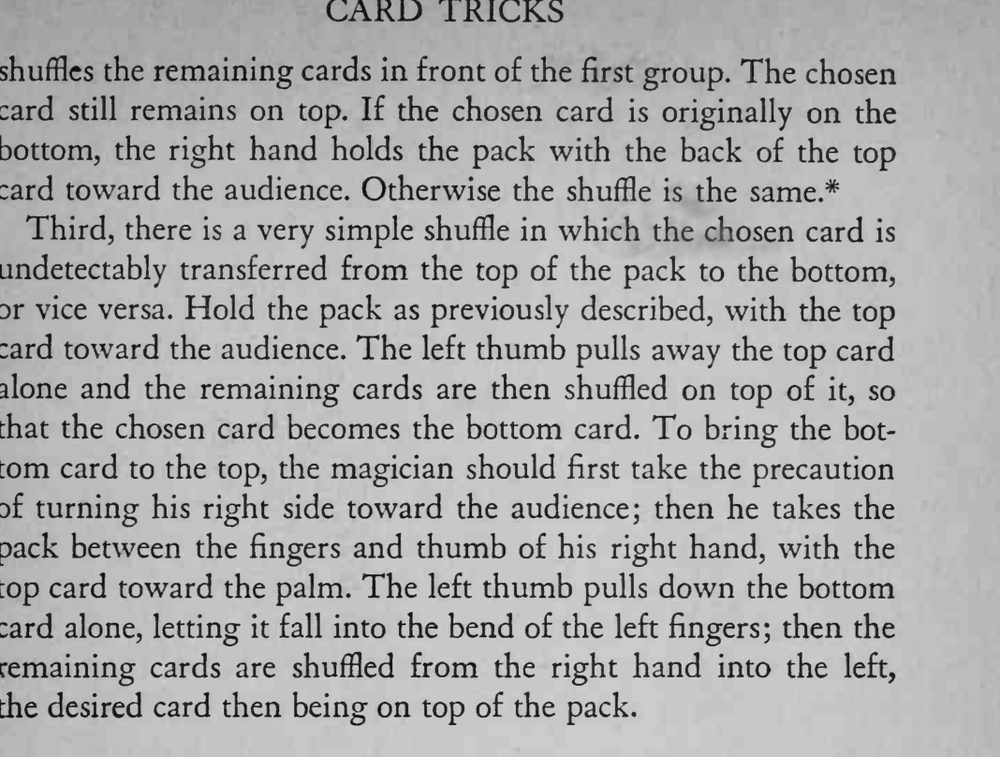

观众看着整副牌被当众洗乱，其实魔术师想留住的牌始终没有离开牌顶或牌底。
假洗的节奏要与普通洗牌完全一致，慢而自然才不显眼。


False shuffling is the means whereby a card may be kept at the top or the bottom of the pack while the magician is shuffling the cards. A false shuffle should not be shown as a trick in itself. No especial skill is required in false shuffles; anyone who can shuffle a pack of cards in the ordinary manner can execute the false shuffle just as easily. First, suppose that the pack is to be shuffled in the dovetail fashion, by cutting it into two heaps and riffling the ends together. The magician has located the chosen card and has cut the cards to bring it to the top of the pack. In riffling the ends of the pack, he merely retains the top card with his thumb, so that it is the last card to fall and its position is undisturbed. Second, for an ordinary shuffle, to keep the chosen card on top of the pack, grip the pack between the thumb and fingers of the right hand, the thumb at one end and the fingers at the other. Hold the pack with the bottom card facing the audience. Now the left thumb comes up, and pulls away some of the cards from the bottom of the pack. As it does so, the left fingers bring along the top card also. Then the right hand, aided by the left thumb, shuffles the remaining cards in front of the first group. The chosen card still remains on top. If the chosen card is originally on the bottom, the right hand holds the pack with the back of the top card toward the audience. Otherwise the shuffle is the same.* Third, there is a very simple shuffle in which the chosen card is undetectably transferred from the top of the pack to the bottom, or vice versa. Hold the pack as previously described, with the top card toward the audience. The left thumb pulls away the top card alone and the remaining cards are then shuffled on top of it, so that the chosen card becomes the bottom card. To bring the bottom card to the top, the magician should first take the precaution of turning his right side toward the audience; then he takes the pack between the fingers and thumb of his right hand, with the top card toward the palm. The left thumb pulls down the bottom card alone, letting it fall into the bend of the left fingers; then the remaining cards are shuffled from the right hand into the left, the desired card then being on top of the pack.